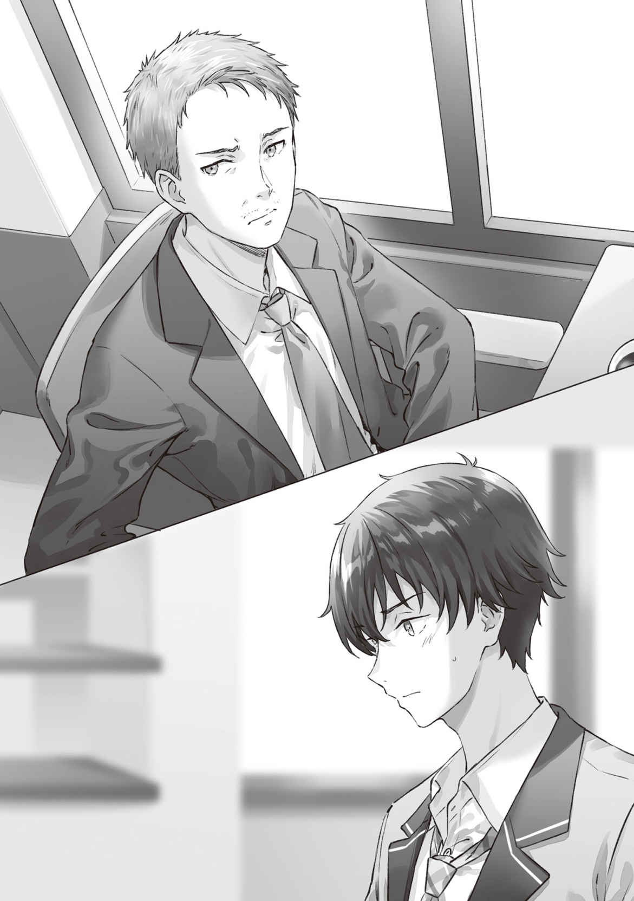
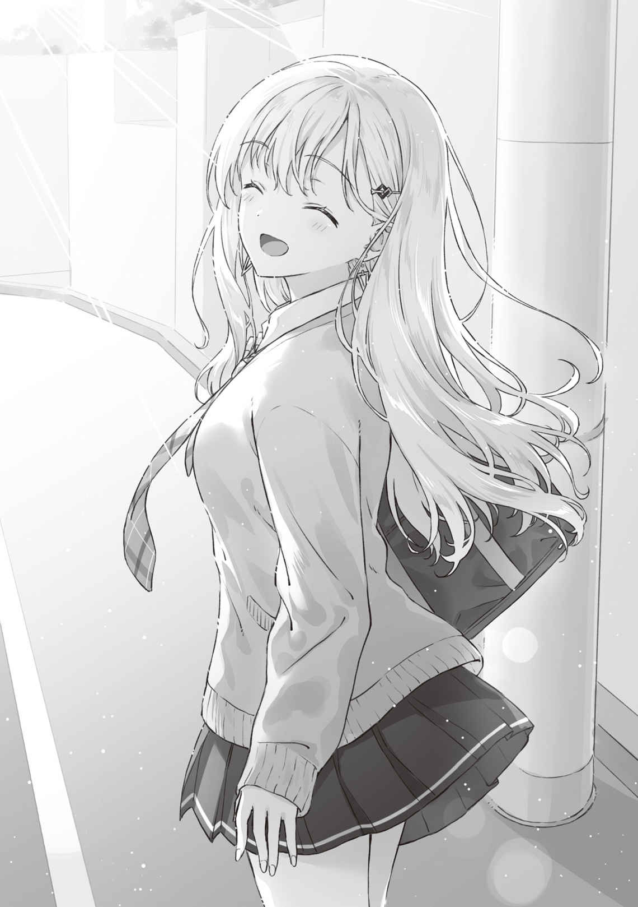

●11月１日（月曜日）
週の明けた月曜日の朝、浅村家はそわそわしていた。
時刻は６時２分。
いつもよりも１時間も早く、もう俺も
ダイニングに全員が
綾瀬さんが「あのひと」と呼ぶところの実父・
綾瀬さんが伊東文也と良好と言うにはほど遠い関係にあることをこの場にいる家族全員が知っていた。だからみんな落ち着かない。
だいじょうぶ？ と心配する亜季子さんに、綾瀬さんは「うん、もう平気」と答える。
ここにいる誰よりも綾瀬さんは落ち着いているように見える。数日前の彼女の様子から考えれば長い暗闇から抜け出たかのように表情は晴れやかだ。
それでも俺たちとしては心配なわけで。
「悠太兄さんに、近くに居てもらうし」
面会には綾瀬さんがひとりで向かうのだけれど、同じ喫茶店で見守っていてほしいと俺は綾瀬さんに頼まれている。
亜季子さんと親父が俺のほうへと視線を移す。
「よろしくね、悠太くん」
亜季子さんが頭を下げ、親父がフライパンを片手に「しっかりな」と言った。そのまま焼いていた目玉焼きを皿の上に滑り落とす。
「さあ。じゃあ、ふたりともそろそろ支度をしたほうがいい。伊東さんを待たせても申し訳ないからね」
親父の言葉に綾瀬さんも俺もうなずいた。
こちらからの無理なスケジュール変更の末に会ってもらうわけだから、遅刻するわけにはいかない。
学校の支度を整えた上でふたり揃って家を出た。
駅にほど近いそのチェーンの喫茶店は、あらゆるメニューがワンサイズ他の喫茶店より大きくお得感があることで有名だけれど、今回の待ち合わせで重要なのはそこではなく営業開始が朝７時と早いことだった。
面会時間はふたりで朝食を食べながら40分ほどを予定している。
これならば終わってから登校しても充分に始業に間に合う。
「じゃ、先に入るね」
おそらく
通りを往復して時間を潰してから店に入る。
店内を見回すと、奥のボックス席に綾瀬さんが座っているのが目に入る。伊東氏は──まだ来ていないようだ。
「君、すまない。通してくれるかな」
背中から掛かった声に俺は慌てて脇に
「ありがとう。すまないね。急いでいるもので！」
朝から妙にハキハキした声で言ったのは、スーツ姿の似合う四十代ほどの男だった。
清潔感のある短い髪を、ワックスを使って自然な感じで立てている。お
まさか、あのひとが綾瀬さんの父親──伊東
俺は慌てて後を追う。
といっても目立つわけにはいかないから、店内を反対側から回り込むようにして、綾瀬さんのいるボックス席近くを目指した。
「ああ、待たせたね！」
伊東氏が声を張り上げる。無駄に声がでかい。
綾瀬さんから聞いていた人物像が『事業に失敗して落ち込んでいた頃の伊東文也』だったので、もうすこし背中を丸めた卑屈っぽい姿を想像していた。自信ありげなエリートにしか見えないそのさまにびっくりしてしまう。
「おはようございます」
綾瀬さんがそっけない声で言った。久しぶりに会った親子の第一声としては温度感に差がありすぎて、俺はやや不安になってしまった。
それでもとりあえず声が落ち着いていることに俺はほっとする。
ひとつ隣の、綾瀬さんを背中にする位置のボックス席が空いているのを確認して、俺はそこに腰を落ち着けた。
会話が聞こえてくる。
「元気そうでよかった！ 久しぶりに会うけど、どんどんきれいになっていくなぁ」
「…………」
「無理してでも会ってくれて
「時間が空いたので」
「もう秋だ。すっかり涼しくなったね。勉強が
「まあ……ぎりぎりです、けど」
「頭がよく、しかもこれだけの美人だ。誰にも負けないだろうなぁ。えらいな、
「……ありがとうございます」
苦しそうに声を絞り出した綾瀬さんに
俺は頭を抱えてしまう。
よその親子の会話を盗み聞くのは良くないことだと思うのだけど、盗み聞くまでもなく聞こえてしまうくらい大声なおかげで罪悪感が薄れてしまうのは幸いというか、なんというか──いやでもううむ。俺は頭を抱えた。
これは会話ではない。
伊東氏は気にしていないようだけれど。
ホール係が綾瀬さんたちのボックスにやってくる。
「ご注文はお決まりですか？」
「ああそうだった、
「ふつうのトースト、珈琲セットで」
「いいのか？ こっちの高いやつでもいいんだぞ。親に遠慮なんてするもんじゃない」
「……べつに、いいです」
「そっか。じゃあ──」
伊東氏が注文を告げる声がした。
流れるように隣の席の俺のほうにもホール係は注文を取りにくる。俺はできるだけ声をひそめて綾瀬さんと同じものを注文した。
「うん。やはり沙季は、すごいよ」
「そう……ですか」
「きれいな上に成績までいいなんて完璧じゃないか！ 同年代では誰も勝てないんじゃないか？」
「大げさです。他にいくらでもいますし」
「いやいや美も学も両立できてる子なんてなかなかいないさ。俺も鼻が高いよ」
期せずして
かつて綾瀬さんが言った。『オシャレを完璧に。第三者から美人だ、きれいだ、って言ってもらえるレベルにどうにか自分を引き上げた上で、学業も、仕事も、何もかも完璧な強い人間になる』と。
それは綾瀬さんが望んでやまない評価だった。
けれど、実際に実の父親から受けた高評価に綾瀬さんはちっとも
「実は俺もね──」
綾瀬さんを何度か褒め倒した後で伊東文也は今度は自分の近況を語り出した。
聞いていて、俺は次第に自分の顔が引きつっていくのを感じてしまう。
いま彼の新しく立ち上げた会社は軌道に乗っているらしい。会社の規模は大きくなり、株式市場への上場も見据えている。増えた年収の額を誇り、購入する新しい家の大きさを語った。ニューヨーク郊外に購入予定の家はプールのある一軒家で、ドレッサーだけでも部屋ひとつぶんの大きさがあるとかなんとか。
「借金もすべて返した。それどころか今がもっとも
伊東文也の言葉が俺の耳の中で反響する。口の中に苦みを感じる。
『これで沙季にも胸を張って会えるなって』
裏を返せば、それまで２か月に１度も面会していたのに、その度に後ろめたさを感じて会っていたということだ。自分が負けたままの状態だったから。
でも、俺は綾瀬さんに聞いて、
離婚の原因は伊東文也が事業に失敗した──負けた──からでは、ない。
なんてこった。綾瀬さんに似ているだって？ ちがう。このひとは。
むしろ、俺だ。
伊東文也は『夏休み合宿のときの俺』だった。
相手に釣り合う自分でいるために、支えられる自分でいるために、より良い大学へ行き、より良い就職先を選べるようになりたい。そうでなければ自分は相手にふさわしくない。
綾瀬さんの横に胸を張って立てる自分でなければならないと。
そんなふうに考えていた俺と、社会的地位を手に入れたことを誇り、そうなったことで実の娘にようやく自信を持って会えるようになったと語っている伊東文也はどこがちがうというのか。
ちがいはしない。同じだ。
彼は自分と相手の力関係ばかり気にしている。
それが悪いわけではない。
相手も同じ性格ならば、話も弾むだろう。
──けれど、
綾瀬さんの顔色を
そのあとも伊東文也は、もちろん父親として
それは娘に対する気遣いの言葉のはずだった。
「お子さん、おめでとうございます」
綾瀬さんの声がどんどん冷たくなっていく。
「うん、ありがとう」
「でも……私が聞きたかったのは、そんな言葉じゃなかった……」
声が震えている。
ようやく気まずい空気を察して伊東氏が押し黙った。
「お待たせいたしました、お客様」
ホール係の女性が綾瀬さんたちの注文した品を持ってきた。ふたりの間に流れる微妙な空気は感じ取れているだろうに、プロのホール係の胆力を発揮して特に反応することなくせっせとテーブルに注文の品を並べてしまう。綾瀬さんにはトーストと
俺の方にもモーニングセットが配膳されてきたけれど、もはや俺には食べている余裕もなくなっていた。
綾瀬さんはホール係が立ち去ってからぽつりと言う。
「私が、聞きたかったのは……」
声は尻すぼみに小さくなってしまう。
──私、文句を言う前に言いたいことがあったんだ。
綾瀬さんは伊東文也に言いたかった。おそらくは子どもの頃から、ずっと。
離婚して２か月に１度の面会になってからも、何度も言おうとした。
けれど、その頃の伊東文也には言えなかった。どうしても。
劣等感を感じているくせに、親としての義務だけは果たそうとしていた頃の伊東文也には言えなかった。
そして、ふたたび成功者となった伊東文也にもまた言えなくなり……。
いっそのこと愛憎のどちらかでも強く持ち合わせていたら、激情のまま言葉を紡ぐことができたかもしれない。けれど愛情も憎悪も、相手に対して強い関心があればこそ生じる感情なのだ。
現実の親子関係は物語ほど劇的な感情の上げ下げがあるわけじゃない。
なんとなく好き。
なんとなく嫌い。
そういう、色で言えば中間色の集まりみたいなものが現実の他人に向けられる感情だ。
学校のクラスメイト程度の距離感ならば、「機嫌を
生活を共にしていた家族に対してはそれなりの親しみも生じていて、でも憎いとまでは言わないが嫌いになれるところも充分にあり……。
そんなぼんやりとした相反する感情がぶつかりあって言葉を鈍らせる。
ちらりと背後を窺う。
綾瀬さんは黙ったまま首を左右に振っている。今回も綾瀬さんは口籠もってしまった。
あれだけの強い思いを抱いて会うと言っていたのに。
だが、決意を込めて赴いたからといってそれですぐになんでもできるようになれるほど人間のスキルというものは促成栽培できないのだ。
気づけば俺は席を立っていた。
──兄としても恋人としても、俺は
綾瀬さん、ごめん。でも、さすがにこれは黙っていられない。
俺は兄で。
恋人だから。
実家に帰省したとき、夜中に祖父の前に立って綾瀬さんを
あのときの勇気を思い出して。
「あの」
ボックス席をひとつ移動して俺は伊東文也に声を掛けた。
なによりもまず先に綾瀬さんが驚いた。
俺の発した「あの」の「あ」の辺りでもう気配を察してはっと息を
「えっと、君は……？」
伊東文也もきょとんとしていた。
すごく気まずい。けれど、もう引き返せない。俺は黙って頭を下げてから口を開く。
「彼女の、いまの家族です」
「いまの……
「はい。息子の、
「君が……」
あっけにとられた顔をしていた
「面会に付いてきたのか？ それはマナー違反だろう」
「それについては謝ります。申し訳ありません」
実際、伊東氏の言うとおりだろう。
伊東
だが俺にとっては──自分と関わりのないこと、ではない。
「わかっているのだったら今は取り込み中だ。遠慮してくれないか」
ぴしゃりと言われて俺は
「無礼であることは承知しています……。けれど、俺はいまは
俺がそう言うと、彼はそこで初めて戸惑ったような表情を浮かべた。
ああ、やっぱり──と思う。
伊東文也と
コミュニケーションとして成立していない。同じ日本語を発しているのに。
それに伊東文也は気づいていない。
「なにを……言っているんだ？」
そう言う彼の顔を見ていると、俺の心が苦しくなってくる。言いたいことは山ほど思いつくのに言葉が出てこない。たとえば、綾瀬さんが「おはようございます」と言ったときに伊東文也は何も返さなかった。「ああ、おはよう」とだけ返せばいいのに。たとえば、綾瀬さんが志望校がぎりぎりだと答えたとき、そこに何も返さなかった。成績優秀な綾瀬さんにとっても
すべてがその調子だった。
あれは会話ではない。相手が何を言うかに関係なく、伊東文也はただ自分の考えていること、感じていることを一方的に告げているだけだ。
だから綾瀬さんは口をつぐむ。
何を言ったら相手の心に響くのかわからなくて。
愛憎という強い感情もないから懇願も
そう考えたとき、俺もまた自分が何を言うべきかを見失ってしまったことを思い知る。
両の手をぎゅっと握りしめたまま立ち尽くしてしまう。
すり合わせができない。できる気がしない。
「さ……」
言葉が無意味に感じてしまう。同じ言語を話しているのに会話にならない相手と、どう接すればいいのか。
「さき、と……」
絞り出せ、頭の奥でもうひとりの俺がささやく。何かを言わなければ、
不意に。ほんとうに、唐突に。俺は、郷土博物館で見た
俺はたまたま志賀直哉の書いた短編『
父親との価値観の相違……。理解しあえずに起こる対立と苦悩。
だが志賀直哉は、三十代の中頃に父親と和解しているのだ。
ああ、くそ。どうやってそれを成し遂げたのか。彼の小説を端から端まで読んでおけば何かヒントがあったのだろうか。今さらここでそれを嘆いても詮無いのだけれど。
小説に人生の答えが書かれているわけじゃない。
それでも答えを求めて人は時に書を読む。
だがいまこのときに俺を導いてくれる本を俺は思いつくことができず……無力感が押し寄せる。
握りしめる両の手のひらに爪が食い込む。痛い。けれども、その痛みなど、おそらくは
「君……」
不機嫌そうな顔をますます険しくしていく
成功している大人の真剣な
「
しかし同時に目に入った、綾瀬さんの不安げな顔のおかげで踏みとどまれた。
後ずさりかけた足に強く体重をかけて。
そうだ。俺は、これから大人になる。それは、高校を卒業して大学生になるというだけの形式的な意味ではない。
大人と正面から向き合って、対等な対話ができる立場になるという意味だ。
大切なひとを守るためにも。
確かな意思を示し、冷静さを保ちながらも、自分の、自分たちの、エゴを通す。
「
「会話を、しているところ、だが」
戸惑うような
伊東文也が綾瀬沙季を見る。
静かに綾瀬さんが言葉をつむぎ始めた。
「お母さんは、お父さんが頑張ったときに
「……え？」
「男としてどれだけ優秀かとか、どれだけ稼げたかとか、どれだけ立派なことをしたかとか、そういうことの証明としてそこにいるわけじゃない」
「なにを言ってるんだ。あたりまえじゃないか」
「……お父さんはさ、お母さんが何か失敗したときに支えてくれる？」
「もちろんだ。いまは、俺にはその権利はないし、今の妻がいる。だが

「じゃあ、逆は？」
「なに？」
「お父さんが失敗したときは？ お母さんはどうすればよかったの？」
「それは……もちろん……」
「お母さんも支えてあげてたよ。でも、お父さんは
「それは……俺は支えるべき側だから」
「わかるよ。それはそれで別に間違っているとは言わない。ひとつの価値観だから」
でも、と綾瀬さんは言う。
「お母さんの価値観はたぶんちがう。お母さんは、相手が困っていたら支えてあげたいって思ってる。男とか女とか関係なく。精神的にとかだけじゃなく。たぶん、お母さんは、もともと誰かの支えになることを自分の役目だと思ってる。だからずっと人と接する仕事をしてる。お金の
「
「それにお母さんはたぶん人の話を聞くのが好きなんだ。だからデパート売り場のお勧めを熱心に聞いちゃうし、お店でお客さんの相手をしてるんだと思う。そして、自分に話しかけてくれたというだけですごく感謝して、相手に何かを返してあげなきゃって考える。ギブ＆テイクでギブは多めに。でもお父さんは私たちに何も話してくれなくなった。悩みも愚痴もつまりは自分の弱さを話せない。自分が強い立場のときだけ
「まあ……そういうこともあるかもしれないが……」
綾瀬さんは首を横に振った。
「わかってる。それが、お父さんの価値観だと思う。いまならわかる。それがわるいって言いたくない」
それまでの──17年の人生で積み上げた言葉が、雪崩をうつようにして綾瀬さんの口から
「でもお母さんは失敗した
俺も思わずうなずいていた。俺の
伊東文也は決して悪人でもなければ愚かでもない。むしろ、その逆だ。事業に失敗して
俺が同じ境遇になったら同じようにこんなに短期で盛り返せるかどうかわからない。
そこに至るまでの果てしなさと努力を考えると頭が下がる。それどころかいまや新しい事業を起こし、新しい家族まで得ている。
でも──。
そういう成功もまた失敗と同じくらい亜希子さんには重要ではないのだと思う。
亜希子さんが人生の伴侶を選ぶ理由はそこにはないのだ。そしてそれはおそらく
「俺は家族を幸せにする
「でもお父さんは私の幸せが何か私に一度だって聞いてくれなかった」
「それは……」
綾瀬さんの言葉がどこまで伊東文也の心に届いているのかはわからない。彼にとってはおそらくは初めて触れる考え方だろうし。それでもあの
「お父さん、私がずっと話したかったこと、言うね」
娘の言葉を父は黙って聞いた。
「もし私を本当に娘として大切に
「それじゃ俺は自分を甘やかしてしまう」
綾瀬さんがうなずいた。わかっていると言いたげに。
「だから希望を言っているだけ。
「おまえは立派な娘だよ、沙季」
父の言葉に娘は首を横に振った。
「お父さん、私ね。いま私のことを『アホでキュートでカワイイ』って言ってくれる友達がいるんだ」
「それは……失礼だな」
思い出すような笑みを浮かべ、綾瀬沙季は自分の親友を、
「彼女は私がアホでも認めてくれる。もちろん立派でも。あの子は私を立体的に見てくれる。だから私も彼女の前では、凸凹のあるふつうの人間のままで居られる」
「ふつうの……」
「私はふつうの娘だよ。立派でもなければ
「沙季……」
「もちろん、お父さんにはお父さんの大切にしている価値観があるのはわかってる。それを変えてなんて言ってない。でももうすこし、ほんのすこしでいいから、周りの人の声を聞いてあげて、顔を見てあげて。考えを知ってあげて。人間は誰でも凸凹のある立体なんだって気づいてほしい。とくに、新しい家族──新しい奥様と、娘さんに対しては」
できない、という否定なのか。
それとも言われていることが理解し難いというしるしなのか。
あるいは娘に言われたことを実行することの困難さを思っての仕草なのか。
「私が言いたかったのはそれだけ」
「
「うん。私は沙季だよ。でもいまは綾瀬沙季だし、
「っ！ いや、それはっ」
「お願い。お父さんと、ぶつかりたくないんだ。これ以上、嫌いになりたくない」
だから、と綾瀬さんは言う。
「私に会うよりも、新しい家族を大切にしてあげて。──さよなら、伊東さん」
そう言って綾瀬さんは
モーニングセット代は大きいコイン１枚と小さいコイン１枚だから充分おつりがくる。
黙ったまま席を立って出ていく。
俺は慌てて自分の席に戻り、鞄と会計レシートを
だが自然と足が止まって、伊東
彼は綾瀬さんの消えていった喫茶店のドアをじっと見つめていた。その顔に浮かぶ感情が、後悔や悲しみといったものでなかったことが俺には心底悔しかった。
ただただ、困惑。それだけだったのだ。
「いまの『さよなら』に合わせるのは難しいですよね」
俺は思わず声を掛けていた。
「え？」
「でも、『おはよう』のほうは言えたと思います。沙季のことを、ちゃんと見ていれば」
「…………」
「困っていたら助けたい。おいしいものを食べさせてあげたい。頑張っていたり良い成績を出したら褒めてあげたい。それがあなたなりの家族の愛し方なんでしょうし、箇条書きにしてしまえば俺だって同じことを考えてるし、しようとしています」
伊東文也は鏡のようなものだ。綾瀬沙季がこの相手に自らの嫌な部分を
でも、明確にちがうところがある。
俺も、
箇条書きは人間の本質をとらえないのだと、確信できる。
「ただ『おはよう』と言い合って、『いただきます』とごはんを食べて、『いってきます』を伝えたら『いってらっしゃい』と見送ってもらえて、ただいっしょにそう言って生活してほしかっただけなんですよ、
「……きれいごとだ」
伊東氏がぽつりと
困惑とはまたべつの、すこし性質のちがった無表情が
「みじめだった頃の俺に
主語は、ぜんぶ、彼自身。
自分がどうされる、ばかりで、綾瀬さんや亜季子さんの視点を想像しようという気持ちは、これっぽっちも
あたりまえか。フィクションならばいざ知らず、現実に生きる人間はそうは変わらない。
歴史的建造物を元の状態に完璧に復元するのが不可能なように、何十年もかけて上塗りを重ねた価値観はちょっとやそっとじゃ変わらない。
綾瀬沙季という少女が大人になる過程で取り残してきてしまった「子ども」の部分を、このひとが慰めてあげる日はきっと訪れないのだろう。
諦めたら自然とすっきりした。
俺自身、綾瀬沙季と伊東文也の
だけどもう、悲しくもないし、悔しくもない。
「横入りしてすみませんでした」
言いながら俺は黙って頭を下げる。
そのまま背中を向けてレジへと向かった。
綾瀬さんの最後の行動の解釈は何通りも可能だろう。それを考えつづけるのは伊東文也自身だ。長い時間をかけて何かを思い、考えを改めるのか。あるいは、いまのままで生きつづけるのか。どちらだとしても彼の人生だ。
それでも、彼が当分は綾瀬さんに面会をしたいと言ってこないだろうことはなんとなく想像できた。
さて、急がないと。
思わぬ時間を取ってしまったから遅刻せずに登校できるかどうかぎりぎりだ。
店を出て、
秋のやわらかな
「
声に驚いて歩みを止める。
通りの角から
「てっきりとっくに学校に行ったものと。待っててくれたの？」
「どうせならいっしょに行きたいし」
信号が変わり、俺たちは並んで横断歩道を渡る。
「綾瀬さんはあれで良かった？」
「うん、スッキリした」
そう言いながら笑顔を俺に向ける。
俺としては正直、差し出がましかったかなと思ってた。そう綾瀬さんに言うと、彼女は小さく首を横に振った。
「
そう言ってから、軽く頭を下げて。
「ありがとう、浅村くん。いや、
「いやそれ、からかってるよね」
そんなことないよ、と笑いながら言われても説得力がない。
「私ね、今回のことで改めて思ったんだ」
「……なにを？」
「浅村くんに私はいつも助けられてるなって。なんだかいつも浅村くんのほうが私よりも半歩くらい先を歩いている気がする」
「そんなことは」
「ある。１週間しかお兄ちゃんじゃないのに。ずるい」
「ずるい、と言われても」
生年月日は自分の好きにできる領分じゃないしなぁ。
「私、やっぱり負けず嫌いかも。勝って相手を
「それはまあ、誕生日が１週間ちがいだからね」
「なのに１年間、『
「ネガティブ感情の、すり合わせ？」
「そう。だからね、手始めに──走ろっか」
「は？」
「じ・か・ん。遅刻するよ、このままだと」
スマホをひっくり返して時計を見せてくる。やばい。確かに走らないと間に合わなそうな時刻だった。
「どっちが先に学校に着くか、競争しよう。勝ったら、今日はお兄ちゃん面なんかさせないから！」
「お兄ちゃん面したつもりないけど」
「行くよ。学校の正門までね」
「あ、いや、ちょっと待って」
「待たない。ほら」
俺のほうを向いた顔を、ビルの隙間から出てきた秋の
「これに負けたら今日は浅村くんはお兄ちゃんじゃないからね。今日は一日中ただの悠太だから！」
陸上のスターターピストルが放つ
気づけば
「待って──って、ああ、もう！」
俺は彼女を追って走り出した。
駆けっこを楽しむ綾瀬さんの声が、風に乗って俺の耳に届けられる。
背中はなおも遠ざかって、俺はなかなか追いつけない。
綾瀬さんは俺が半歩前にいるって言ったけれど。
俺にとっては綾瀬さんのほうがいつだって──。
「秋の風、気持ちいい！」
軽やかな声で綾瀬さんが放った言葉を俺は懸命に走って追いかけた。
